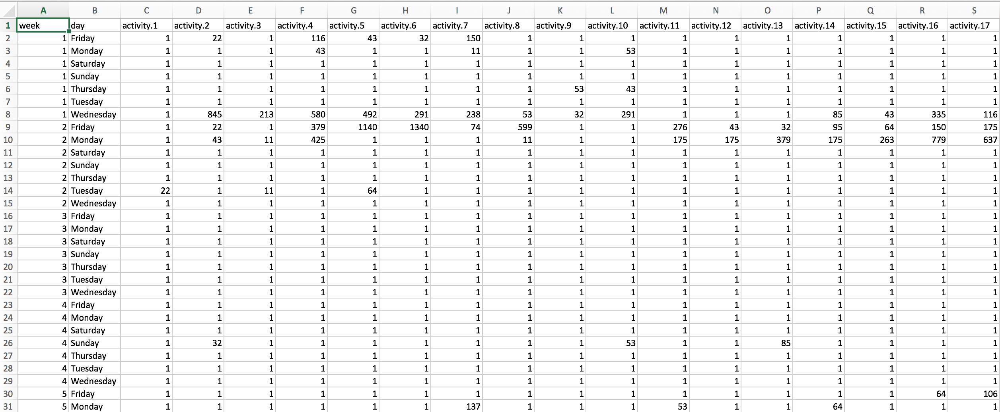

Exercise Data
Description
This is a sample of my work for the Data Science course (P8105) that I took as a part of my masters program.
We were given a csv file with several months worth of data collected from a patient’s accelerometer device. The goal was to understand patterns of physical activity over long periods of time.

Data Cleaning
acce_data = original_acce_data %>%
janitor::clean_names() %>%
gather(key = minutes, value = activity, activity_1:activity_1440) %>%
separate(minutes, into = c("remove_1", "min_day"), sep = "_") %>%
select(-remove_1) %>%
mutate(day = factor(day, levels = str_c(c("Sunday", "Monday", "Tuesday", "Wednesday", "Thursday", "Friday", "Saturday"))),
min_day = as.numeric(min_day)) The original dataset had 1442 columns and 329 rows. There are 47 weeks of data and 1440 columns representing the activity level for every minute each day. To clean the data, I used “gather” to create a min_day variable specifying the minute of the day and an activity variable for the actual activity measurement data.
Exploratory Analysis
The overall average activity is 240.34, with standard deviation of 415.53. The median activity is 43. The activity levels range from 1.041710^{4} to 1.
Top 5 weeks with highest average activity
acce_data %>%
group_by(week) %>%
summarize(avg_act = mean(activity),
sd_act = sd(activity)) %>%
filter(min_rank(desc(avg_act)) < 6) %>%
arrange(desc(avg_act)) %>%
knitr::kable(digits = 2)| week | avg_act | sd_act |
|---|---|---|
| 17 | 320.61 | 523.79 |
| 18 | 319.93 | 479.38 |
| 37 | 316.44 | 444.49 |
| 36 | 315.39 | 509.06 |
| 46 | 307.40 | 522.47 |
- Top 5 weeks with lowest average activity
acce_data %>%
group_by(week) %>%
summarize(avg_act = mean(activity),
sd_act = sd(activity)) %>%
filter(min_rank(avg_act) < 6) %>%
arrange(avg_act) %>%
knitr::kable(digits = 2)| week | avg_act | sd_act |
|---|---|---|
| 3 | 1.11 | 4.56 |
| 4 | 53.52 | 233.39 |
| 12 | 73.02 | 229.05 |
| 2 | 163.72 | 331.69 |
| 31 | 166.74 | 338.75 |
- Comparing each week’s average activity to overall average
acce_data %>%
group_by(week) %>%
summarize(week_avg = mean(activity)) %>%
mutate(week_change = week_avg - 240.337) %>%
ggplot(aes(x = week, y = week_change)) +
geom_bar(stat = "identity", fill = "steelblue") +
scale_x_continuous(breaks = c(1:47)) +
theme(axis.text.x = element_text(angle = 90, hjust = 1)) +
labs(
title = "Weekly average activity level in comparison to overall average",
x = "Week",
y = "Difference between week and overall average",
caption = "Overall average activity across all weeks is 240.337"
)
- From this graph, we can see that the participant had activity levels below average within the first few weeks weeks. In the middle of the time period, participant had around average activity level with a few exceptions for dips. However, participant had consistently higher than average activity levels starting at week 35.
Analysis
Linear Regression
act_week_lm <- lm(acce_data$activity ~ acce_data$week)
summary(act_week_lm)##
## Call:
## lm(formula = acce_data$activity ~ acce_data$week)
##
## Residuals:
## Min 1Q Median 3Q Max
## -303.1 -231.0 -181.1 91.6 10132.3
##
## Coefficients:
## Estimate Std. Error t value Pr(>|t|)
## (Intercept) 173.77657 1.22191 142.22 <2e-16 ***
## acce_data$week 2.77335 0.04432 62.57 <2e-16 ***
## ---
## Signif. codes: 0 '***' 0.001 '**' 0.01 '*' 0.05 '.' 0.1 ' ' 1
##
## Residual standard error: 413.8 on 473758 degrees of freedom
## Multiple R-squared: 0.008196, Adjusted R-squared: 0.008194
## F-statistic: 3915 on 1 and 473758 DF, p-value: < 2.2e-16Results from linear regression shows that at an alpha level of 0.05, week is significantly associated with activity level (T-statistic 62.57, p-value: <2e-16).
With every 1 week increase in time, the activity level rises by about 2.773 units on average.
acce_data %>%
group_by(week) %>%
summarize(avg_act_wk = mean(activity)) %>%
ggplot(aes(x = week, y = avg_act_wk)) +
geom_point() +
geom_line() +
geom_smooth(method = lm, se = FALSE) +
scale_x_continuous(breaks = c(1:47)) +
theme(axis.text.x = element_text(angle = 90, hjust = 1)) +
labs(
title = "Average activity for each week",
x = "Week",
y = "Average activiy",
caption = "Blue line is the Linear Regression Line"
)
This graph shows that the average activity per minute has an overall upward trend as week increases. The linear regression line is also plotted, showing that on average the participant gains 2.773 units of activity per week. Additionally, we can see from the graph that weeks 3 and 4 had observably low to almost none activity levels. It could be hypothesized that the participant did not feel well during those two weeks. The activity levels became much more consistent beginning at week 20.
Day of week
- Overall average and SD of activity for each day of the week
acce_data %>%
group_by(day) %>%
summarize(avg_act_day = mean(activity),
sd_act_day = sd(activity)) %>%
knitr::kable(digits = 2)| day | avg_act_day | sd_act_day |
|---|---|---|
| Sunday | 249.71 | 510.46 |
| Monday | 220.35 | 369.17 |
| Tuesday | 213.26 | 352.49 |
| Wednesday | 236.19 | 376.11 |
| Thursday | 247.17 | 387.30 |
| Friday | 270.76 | 461.99 |
| Saturday | 244.93 | 424.81 |
acce_data %>%
group_by(week, day) %>%
summarize(avg_act_day = mean(activity)) %>%
ggplot(aes(x = day, y = avg_act_day, color = day)) +
geom_boxplot() +
labs(
title = "Average activity for each day of week",
x = "Day of week",
y = "Average activiy"
)
This graph shows that the participant has highest average activity around the end of week and weekends and lowest at the beginning of the week. Friday in particular has the highest average and Tuesday has the lowest average activity. Sunday has the largest range whereas midweek, especially Wednesday, has the smallest range. There are also multiple outliers for low average activity levels across days of the week. However, Saturday has two outliers for very high average activity levels.
acce_data %>%
group_by(day, min_day) %>%
ggplot(aes(x = min_day, y = activity, color = day)) +
geom_smooth(se = FALSE) +
facet_grid(~day) +
theme(axis.text.x = element_text(angle = 90, hjust = 1)) +
labs(
title = "Average activity at each minute across days of week",
x = "Minute of day",
y = "Average activiy"
)## `geom_smooth()` using method = 'gam' and formula 'y ~ s(x, bs = "cs")'
This graph shows the average activity level per minute across days of the week. The participant is most active throughout the day on Sunday and during evenings of Thursdays and Fridays. The hook on Saturday also shows that he sleeps latest around Friday nights - Saturday midnight. Additionally, he has low activity levels on Mondays and Tuesdays.
24-Hour Activity
acce_data %>%
group_by(min_day) %>%
summarize(avg_all = mean(activity)) %>%
ggplot(aes(x = min_day, y = avg_all)) +
geom_point() +
scale_x_continuous(breaks = c(1, 60, 120, 180, 240, 300, 360, 420, 480, 540, 600, 660, 720, 780, 840, 900, 960, 1020, 1080, 1140, 1200, 1260, 1320, 1380, 1440)) +
theme(axis.text.x = element_text(angle = 90, hjust = 1)) +
labs(
title = "Average activity across minutes of day",
x = "Minutes of day",
y = "Average activity"
)
This graph shows low activity for hours in which participant is asleep. Activity level is usually high during wake hours from 540th minute (9 AM) to 1260th minute (9 PM). The participant sometimes has more activity at midnight on some days compared to others.